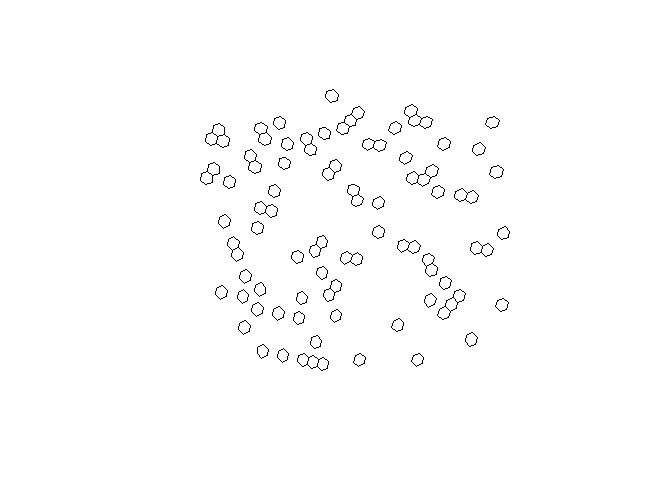

h3o is now on CRAN‼️
R users now have access to a pure Rust implementation of Uber's H3, a hexagonal geospatial grid and indexing system.
Blake Vernon, Josiah Parry
Sep 9, 2025
The extendr-powered R package h3o provides access to a pure Rust implementation
of Uber’s H3 Geospatial Indexing System.
Originally developed by Josiah Parry, the R package has also become an official
product of extendr, which means community support 🤝 and maintenance 🏗️ into
the foreseeable future.
h3o at a glance 👀
The package provides functionality to interact with H3’s grid as vectors, which
can be converted to and from sf geometries.
library(h3o)
library(dplyr)
library(sf)
library(tibble)
xy <- data.frame(
x = runif(100, -5, 10),
y = runif(100, 40, 50)
)
pnts <- st_as_sf(
xy,
coords = c("x", "y"),
crs = 4326
)
mutate(pnts, h3 = h3_from_points(geometry, 5))Simple feature collection with 100 features and 1 field
Geometry type: POINT
Dimension: XY
Bounding box: xmin: -4.984449 ymin: 40.02991 xmax: 9.927412 ymax: 49.57376
Geodetic CRS: WGS 84
First 10 features:
geometry h3
1 POINT (6.615273 41.88461) 85394d9bfffffff
2 POINT (-0.5700488 41.87264) 853970b3fffffff
3 POINT (-2.33205 41.95537) 8539292ffffffff
4 POINT (-2.450051 47.21917) 85184557fffffff
5 POINT (6.373951 47.05955) 851f8203fffffff
6 POINT (3.287704 44.73006) 851f921bfffffff
7 POINT (1.477562 42.97844) 853962b7fffffff
8 POINT (0.5357143 44.39415) 8539641bfffffff
9 POINT (1.97672 48.76817) 851fb47bfffffff
10 POINT (-4.807255 48.05959) 851846cffffffffYou can use the st_as_sfc() method to convert H3 hexagons to sf POLYGONs.
# replace geometry
h3_cells <- pnts |>
mutate(
h3 = h3_from_points(geometry, 4),
geometry = st_as_sfc(h3)
)
# plot the hexagons
plot(st_geometry(h3_cells))
H3 cell centroids can be returned using h3_to_points(). If sf is avilable,
the results will be returned as an sfc (sf column) object. Otherwise it will
return a list of sfg (sf geometries).
# fetch h3 column
h3s <- h3_cells[["h3"]]
# get there centers
h3_centers <- h3_to_points(h3s)
# plot the hexagons with the centers
plot(st_geometry(h3_cells))
plot(h3_centers, pch = 16, add = TRUE, col = "black")H3 at light speed ⚡
Because it builds on a pure Rust implementation, h3o is also very very fast.
Here are some benchmarks, which also serve to showcase h3o tools.
Creating polygons
h3_strs <- as.character(h3s)
bench::mark(
h3o = st_as_sfc(h3s),
h3jsr = h3jsr::cell_to_polygon(h3_strs),
relative = TRUE
)# A tibble: 2 × 6
expression min median `itr/sec` mem_alloc `gc/sec`
<bch:expr> <dbl> <dbl> <dbl> <dbl> <dbl>
1 h3o 1 1 15.6 1 1
2 h3jsr 17.8 17.3 1 274. 7.96Converting polygons to H3 cells:
nc <- st_read(system.file("gpkg/nc.gpkg", package = "sf"), quiet = TRUE) |>
st_transform(4326) |>
st_geometry()
bench::mark(
h3o = sfc_to_cells(nc, 5, "centroid"),
h3jsr = h3jsr::polygon_to_cells(nc, 5),
check = FALSE,
relative = TRUE
)# A tibble: 2 × 6
expression min median `itr/sec` mem_alloc `gc/sec`
<bch:expr> <dbl> <dbl> <dbl> <dbl> <dbl>
1 h3o 1 1 5.42 1 2.26
2 h3jsr 5.81 5.61 1 34.1 1 Converting points to cells
bench::mark(
h3o = h3_from_points(pnts$geometry, 3),
h3jsr = h3jsr::point_to_cell(pnts$geometry, 3),
check = FALSE,
relative = TRUE
)# A tibble: 2 × 6
expression min median `itr/sec` mem_alloc `gc/sec`
<bch:expr> <dbl> <dbl> <dbl> <dbl> <dbl>
1 h3o 1 1 21.2 1 1.03
2 h3jsr 21.2 23.0 1 955. 1 Retrieve edges
bench::mark(
h3o = h3_edges(h3s),
h3jsr = h3jsr::get_udedges(h3_strs),
check = FALSE,
relative = TRUE
)# A tibble: 2 × 6
expression min median `itr/sec` mem_alloc `gc/sec`
<bch:expr> <dbl> <dbl> <dbl> <dbl> <dbl>
1 h3o 1 1 2.90 1 1.07
2 h3jsr 4.38 3.14 1 7.02 1 Get origins and destinations from edges.
# get edges for a single location
eds <- h3_edges(h3s[1])[[1]]
# strings for h3jsr
eds_str <- as.character(eds)
bench::mark(
h3o = h3_edge_cells(eds),
h3jsr = h3jsr::get_udends(eds_str),
check = FALSE,
relative = TRUE
)# A tibble: 2 × 6
expression min median `itr/sec` mem_alloc `gc/sec`
<bch:expr> <dbl> <dbl> <dbl> <dbl> <dbl>
1 h3o 1 1 37.9 1 1.00
2 h3jsr 48.2 38.6 1 2.52 1 Installation 📦
You can install the release version of h3o from CRAN with:
install.packages("h3o")Or you can install the development version from GitHub with:
# install.packages("pak")
pak::pak("extendr/h3o")Learn more 🧑🎓
See the package documentation for more details: http://extendr.rs/h3o/.
If you encounter a bug or would like to request new features, head over to the GitHub repository: https://github.com/extendr/h3o.